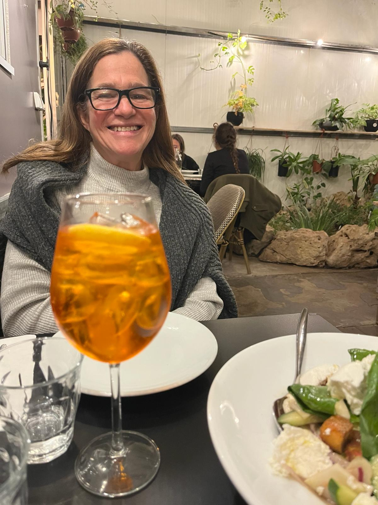
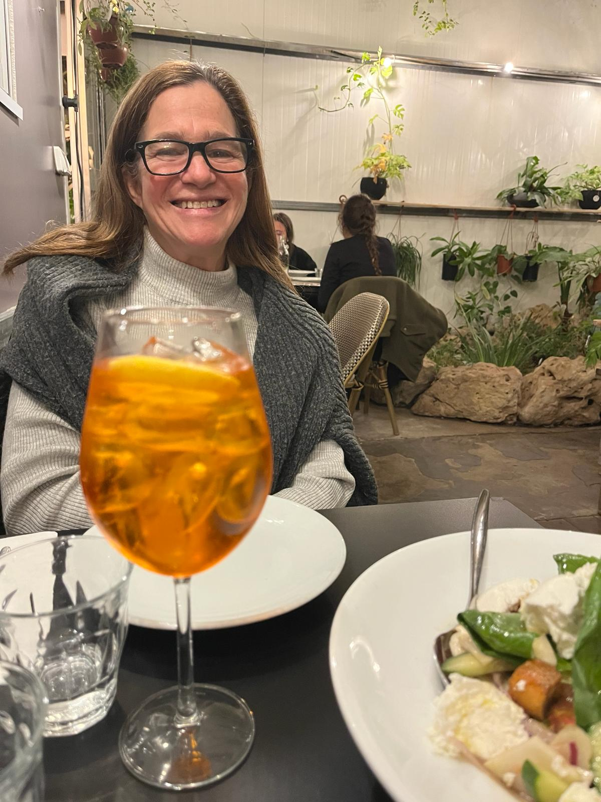

Tamar Almogy
Tamar Almogy
Hello, I'm
Tamar Almogy
and welcome to my page!


About Me
I am a third-year student of computer science at Reichman University.
I live in Tel-Aviv for the past four years. However, my roots trace back to Mevaseret Zion, where I spent my formative years.
My childhood was enriched by experiences beyond borders. Over the span of four years, my family embarked on a journey to the United States,
driven by the professional pursuits of my parents. Those years abroad ignited a sense of curiosity and adventure within me, laying the foundation for a global perspective
that continues to shape my worldview.
Family holds a special place in my heart, with one brother and two sisters who have been my companions through life's twists and turns.
Venturing into the realm of coding has been a recent fascination for me.
While it's a new terrain, I'm gradually unraveling its intricacies and finding joy in the elegant solutions it offers.
 

Preprints

Publications


Deep Image Fingerprint: Towards Low Budget Synthetic Image Detection and Model Lineage Analysis.
WACV, 2024.
[webpage] [pdf] [code]

GEFF: Improving Any Clothes-Changing Person ReID Model using Gallery Enrichment with Face Features.
RWS Workshop, WACV, 2024.
[webpage] [pdf] [code]

Diffusing Colors: Image Colorization with Text Guided Diffusion.
SIGGRAPH Asia, 2023.
[webpage] [pdf]

Break-A-Scene: Extracting Multiple Concepts from a Single Image.
SIGGRAPH Asia, 2023.
[webpage] [pdf] [code] [video]

Blended Latent Diffusion.
ACM Transactions on Graphics (Proc. SIGGRAPH), 2023.
[webpage] [pdf] [code]

SpaText: Spatio-Textual Representation for Controllable Image Generation.
IEEE Conference on Computer Vision and Pattern Recognition (CVPR), 2023.
[webpage] [pdf]

Ham2Pose: Animating Sign Language Notation into Pose Sequences.
IEEE Conference on Computer Vision and Pattern Recognition (CVPR), 2023.
[webpage] [pdf] [code]

DDNeRF: Depth Distribution Neural Radiance Fields.
WACV, 2023.
[webpage] [pdf] [code]

GAN Cocktail: mixing GANs without dataset access.
ECCV, 2022.
[webpage] [pdf] [code]

DeepShadow: Neural Shape from Shadow.
ECCV, 2022.
[webpage] [pdf] [code]

Blended Diffusion for Text-driven Editing of Natural Images.
IEEE Conference on Computer Vision and Pattern Recognition (CVPR), 2022.
[webpage] [pdf] [code]

Disentangled3D: Learning a 3D Generative Model with Disentangled Geometry and Appearance from Monocular Images.
IEEE Conference on Computer Vision and Pattern Recognition (CVPR), 2022.
[webpage] [pdf]

Dynamic Guidance for Decluttering Photographic Compositions.
ACM User Interface Software and Technology Symposium (UIST), 2021.
[webpage] [video (presentation)] [video (short)] [video (shorter)] [pdf]

Advances in Neural Rendering.
ACM SIGGRAPH Courses, 2021.
[webpage] [video-1] [video-2]

Endless Loops: Detecting and Animating Periodic Patterns in Still Images.
ACM Transactions on Graphics (Proc. SIGGRAPH), 2021.
[webpage] [video] [blog]

Iterative Text-based Editing of Talking-heads Using Neural Retargeting.
ACM Transactions on Graphics, 2021.
[webpage] [video] [pdf] [supp]

Lifespan Age Transformation Synthesis.
ECCV, 2020.
[webpage] [pdf] [dataset] [code] [colab notebook] [bib]

Detecting Deep-Fake Videos from Phoneme-Viseme Mismatches.
CVPR Workshop on Media Forensics, 2020
[pdf] [bib]

State of the Art on Neural Rendering.
Computer Graphics Forum (Eurographics STAR report), 2020
[pdf] [talk] [bib]

Adaptive Photographic Composition Guidance.
CHI, 2020
[webpage] [pdf] [video] [talk] [bib]

Editing Self Image.
Communications of the ACM, 2020
[pdf] [bib]

Text-based Editing of Talking-head Video.
ACM Transactions on Graphics (Proc. SIGGRAPH), 2019
[webpage] [pdf] [video] [bib]

Optimizing Portrait Lighting at Capture-Time Using a 360 Camera as a Light Probe.
ACM User Interface Software and Technology Symposium (UIST), 2019
[pdf] [webpage (supplementary material, visualizations)] [video] [talk] [bib]

Puppet Dubbing.
The 30th Eurographics Symposium on Rendering (EGSR), 2019
[pdf] [video] [results] [bib]

Unsupervised Natural Image Patch Learning.
Computational Visual Media, 2019. Best paper award.
[pdf] [bib]

Nasal Distortion in Short-Distance Photographs: The Selfie Effect.
JAMA Facial Plastic Surgery, 2018
[pdf] [bib]
O. Fried and B. Paskhover.
Perceived Facial Distortions in Selfies Are Explained by Viewing Habits—Reply.
JAMA Facial Plastic Surgery, 2018
[pdf] [bib]

Patch2Vec: Globally Consistent Image Patch Representation.
Computer Graphics Forum (Proc. Pacific Graphics), 2017
[pdf] [video] [supp] [bib]

Photo Manipulation, The Easy Way.
PhD Dissertation, Princeton University, 2017 [pdf] [bib]

Perspective-aware Manipulation of Portrait Photos.
ACM Transactions on Graphics (Proc. SIGGRAPH), 2016
[webpage] [pdf] [video] [bib]

Palette-based Photo Recoloring.
ACM Transactions on Graphics (Proc. SIGGRAPH), 2015
[pdf] [video] [demo] [webpage] [bib]

Finding Distractors In Images.
28th IEEE Conference on Computer Vision and Pattern Recognition (CVPR), 2015
[pdf] [video] [webpage] [data] [code] [popular-science-article] [bib]

IsoMatch: Creating Informative Grid Layouts.
36th Annual Conference of the European Association for Computer Graphics (Eurographics), 2015
[pdf] [video] [code] [bib]

AudioQuilt: 2D Arrangements of Audio Samples using Metric Learning and Kernelized Sorting.
14th International Conference on New Interfaces for Musical Expression (NIME), 2014
[pdf] [video] [bib]

Cross-modal Sound Mapping Using Deep Learning.
Proc. New Interfaces for Musical Expression (NIME), 2013
[pdf] [video] [bib]

Texture Synthesis for Particle Infused Textures.
Masters Thesis, The Hebrew University of Jerusalem, Israel, 2012
[pdf]

Single-cell Resolution Analysis of Yeast Response to Osmo-Stress.
Undergrad Thesis, The Hebrew University of Jerusalem, Israel, 2010
Tutorials
Neural Rendering.
CVPR Tutorial, 2020
[webpage] [morning session] [afternoon session]
Media Coverage
"Two Minute Papers" highlighted several of our research projects throughout the years.
Deepfakes as a force for good (while being mindful of potential misuse). [digitaltrends]
Our YouTube video reached 350,000 views! (For a technical research video with no cats nor babies...)
Our work on Text-based Editing of Talking-head Video (2019) received some media attention. While I would have liked to see more on the exciting legitimate use cases, most stories focus on the fake-news angle (which is to be expected given the current political climate.) Hopefully this will help highlight the current issues with video authentication and more broadly, with misinformation.
[Stanford] [Washington Post] [Vice] [Fox News] [The Verge] [WorldStarHipHop] [Mashable] [Daily Mail] [The Register] [Business Insider] [TNW] [Observer] [Dazed] [ynet (he)] and more:
Another interesting read that mentions our research: [Washington Post].
Wired video on photography, referencing some of our past research: [video].
Our research letter in JAMA Facial Plastic Surgery received some media attention! As of April 6, 2018, it has the #1 Altmetric score in JAMA Facial Plastic Surgery (#1 of 566) and is in the top 0.02% of all outputs tracked by Altmetric (#2219 of 9,569,234). [Altmetric]
Nasal Distortion in Short-Distance Photographs: The Selfie Effect (2018)
[CNN] [The Washington Post] [CBS News] [Forbes] [Wired] [The Verge] [ABC] [Newsweek] [Vox] [Daily Mail] [cnet] and many more:
Face Warp, Art of Science (2017)
[PAW]
Radio story on the future of media manipulation (2017, in German)
[webpage] [mp3]
Perspective-aware Manipulation of Portrait Photos (2016)
[Gizmodo] [Motherboard] [Lonely Planet] [Forbes] [CNN] [FastCompany] [CACM] [DPReview] [DailyMail] [Yahoo Tech] [Digital Trends] [Gizmag] [Wired DE] [Spiegel] [PetaPixel] [TOI] [Science 2.0] [cnet] [NJ] [DIYPhotography] [designboom] [Fstoppers] [Inverse] [Princeton] [ICSJ] [Two Minute Papers]
Finding Distractors In Images (2015)
[Popular Science] [MSN] [Daily Mail] [Princeton] [IBT] [Yahoo] [ephotozine]
[Adobe MAX (video)] [TNW] [Inverse] [PAW]
Exposed, Art of Science (2013)
[Wired] [Popular Science] [Princeton] [National Geographic] [Gizmodo] [LiveScience] [Maxisciences]
Grants, Awards & Honors
[RUni ] Israel Science Foundation, personal research grant (4 years), 2021.
[RUni ] Industry grant, Lightricks Ltd.
[Post ] The Brown Institute for Media Innovation, Fellow 2017-2019
[Post ] The Brown Institute for Media Innovation, Magic Grant 2018-2019
[Post ] The Brown Institute for Media Innovation, Magic Grant 2017-2018
[Ph.D.] Siebel Scholar, Class of 2017
[Ph.D.] Google PhD Fellowship, 2014-2016
[Ph.D.] Gordon Y.S. Wu Fellowship in Engineering, 2012-2013
[M.S. ] Scholarship of excellence, School of Computer Science, The Hebrew University, 2010-2011
[B.Sc.] Graduated magna cum laude
[B.Sc.] Amirim interdisciplinary honors program, 2007-2010
[B.Sc.] Scholarship of excellence, The Hebrew University, 2007-2010
[B.Sc.] Dean's list for 2007/8, 2008/9 and 2009/10
Patents
Optimizing Photo Album Layouts, US9424671 B1
Teaching
Reichman University — "The Computer As A Content Creator", spring 2023
Reichman University — "Advanced Seminar on Virtual Humans", spring 2022
Reichman University — "Advanced Seminar on Neural Rendering", spring 2021
Stanford University — "Computational Video Manipulation", spring 2019
Princeton University — Teaching Assistant, "Computer Graphics", spring 2013
Princeton University — Teaching Assistant, "Computer Vision", fall 2013
Princeton University — Teaching Assistant, "MATLAB short course on programming", fall 2013
Hebrew University of Jerusalem — "Introduction to Software and System Security", fall 2011/12
Hebrew University of Jerusalem — "Introduction to Software and System Security", spring 2011
Service
| SIGGRAPH | Technical Papers Committee 2022–2023 |
| Technical Papers Reviewer 2015–2017, 2019–2024 | |
| Posters Adjunct Committee 2017 | |
| General Program Reviewer 2016 | |
| Posters Reviewer 2016 | |
| SIGGRAPH Asia | Technical Papers Committee 2024 |
| Reviewer 2018–2023 | |
| Israel Science Foundation (ISF) | Reviewer 2022–2023 |
| WACV | Reviewer 2023 |
| CVPR | Reviewer 2017–2020 (outstanding reviewer), 2022 |
| ICLR | Reviewer 2022 |
| UIST | Reviewer 2021–2022 |
| Transactions on Visualization and Computer Graphics | Reviewer 2022 |
| ICCV | Reviewer 2017, 2021 |
| TPAMI | Reviewer 2021 |
| ECCV | Reviewer 2018, 2020 |
| Computer Graphics Forum | Reviewer 2015–2016, 2019 |
| Transactions on Graphics | Reviewer 2016, 2018 |
| Transactions on Applied Perception | Reviewer 2018 |
| International Journal of Human-Computer Interaction | Reviewer 2018 |
| The Visual Computer | Reviewer 2017 |
| Transactions on Multimedia | Reviewer 2017 |
| Transactions on Image Processing | Reviewer 2016 |
Students
Shimon Malnick (with Shai Avidan).
Serge Sinitsa.
Rotem Shalev (with Amit Bermano).
Dan Botchan (with Yacov Hel-Or).
Omer David.
Almog Friedlander.
Eyal Michaeli.
Gal Almog (with Ariel Shamir).
Graduated:
Eran Levin (with Amir Averbuch).Asaf Karnieli (with Yacov Hel-Or).
Dudi Dadon (with Yacov Hel-Or).
Daniel Anderson (with Ariel Shamir).
Or Nachmias (with Ariel Shamir).
Gili Knafo.
Bar Cohen.